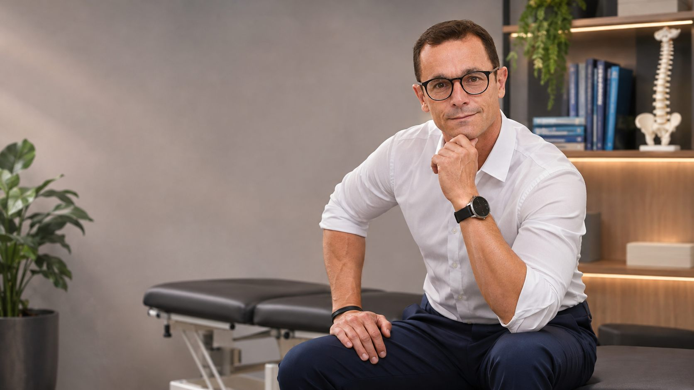
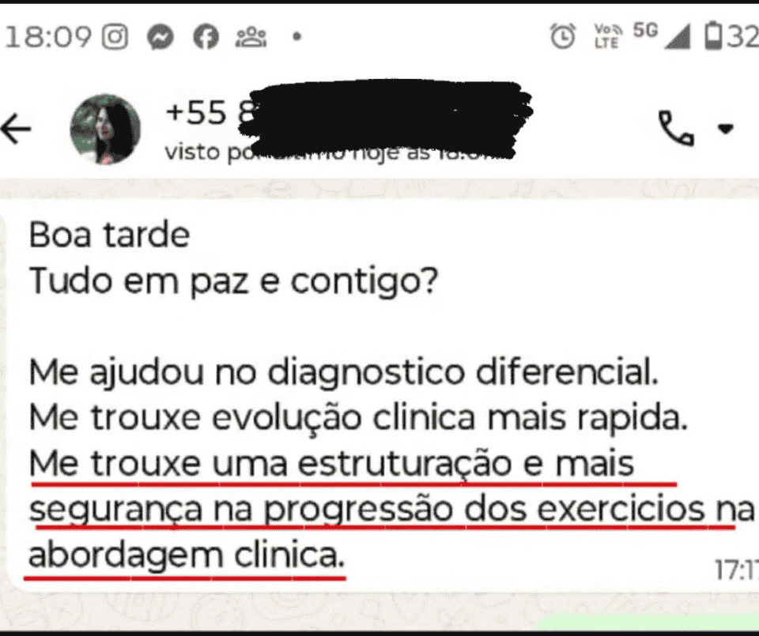
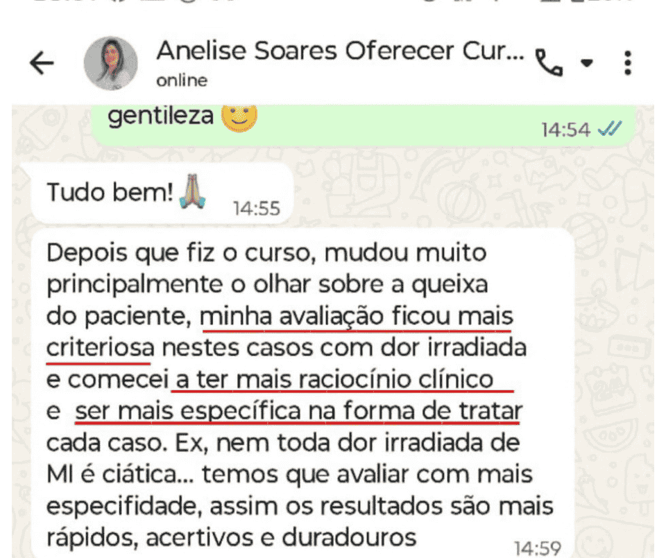
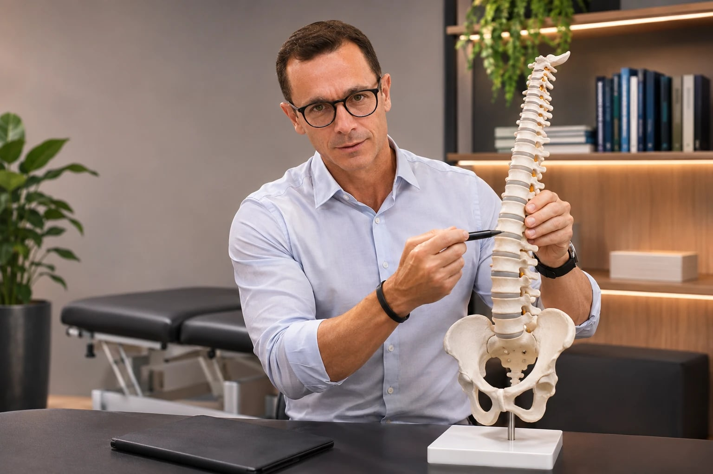

Para fisioterapeutas que atendem dor irradiada
Domine os casos de dor irradiada usando a neurodinâmica
O método CSC, desenvolvido por Gunther Löffler, dá clareza ao caso, classifica e conduz com segurança os casos que desafiam até quem tem anos de consultório.

- 8 módulos, da dor à prática
- 12 meses de acesso e suporte
- Casos reais analisados pelo Gunther
- Comunidade de alunos
O que passa na sua cabeça depois do último paciente.
Fim do dia. Você revisa os casos que ficaram.
Será que é o nervo mesmo?
Ele melhorou por três dias e voltou tudo.
Já fiz tudo o que sei. O que me falta?
Mudo a conduta ou insisto mais uma semana?
Dou alta ou tem algo que eu não vi?
Se você já pensou isso, não falta esforço. Falta um caminho claro.
O problema não é falta de técnica.
Você estuda, faz curso, atende todo dia. O repertório existe. O que falta, nos casos que fogem do padrão, é uma ordem: o que esse sinal está dizendo, em que quadro esse paciente se encaixa e qual é o próximo passo.
Sem essa ordem, cada decisão vira aposta. Você troca a técnica, insiste mais uma semana ou encaminha com a sensação de que deixou algo passar.
Casos complexos não são resolvidos por mais técnicas. São resolvidos por clareza clínica.
Mecanismo
Identificar qual mecanismo está por trás da dor.
Interpretação
Ler as respostas do paciente durante a avaliação.
Critério
Ter regras claras para cada fase do tratamento.
O que fisioterapeutas dizem depois de aplicar.





Siga o nervo até a causa da dor.
O Método CSC, de Clínica Sob Controle, organiza o raciocínio clínico do Gunther em três passos. Você repete a mesma sequência em todo caso.
Clareza
Entenda o que está acontecendo com o paciente e qual mecanismo explica a dor.
A raiz: de onde o sinal parte.Classificação
Situe o paciente no quadro clínico certo, com critérios para cada nível.
O trajeto: por onde o caso passa.Condução
Escolha o tratamento, saiba quando progredir, mudar de estratégia ou dar alta.
O destino: o que fazer a seguir.A neurodinâmica entra como ferramenta dentro dessa sequência. Você aprende a técnica e, principalmente, quando ela faz sentido.
O que muda no seu atendimento.
Hoje
Com o método
Testar uma técnica e esperar para ver.
Saber qual mecanismo você está tratando antes de escolher a conduta.
O paciente melhora por três dias e volta tudo.
Ler as respostas durante a avaliação e ajustar a conduta com critério.
Insistir ou mudar? A dúvida fica para a próxima sessão.
Regras claras para progredir, mudar de estratégia ou dar alta.
Evitar o caso que foge do padrão.
Segurança para investigar e conduzir o caso complexo.
Teste rápido: você se reconhece aqui?
Marque o que acontece no seu consultório. Leva menos de um minuto.
Seu resultado
Marque as frases ao lado
Escolha as que descrevem o seu consultório e o seu resultado aparece aqui.
Quero entrar no FisioExpertPor dentro do FisioExpert.
Oito módulos em aulas gravadas e diretas ao ponto, da dor à prática. Toque em um módulo para ver o que ele cobre.
Módulo 1Boas-vindas e orientação
Como a formação funciona e como aproveitar melhor cada conteúdo.
Módulo 2Entendendo a dor
Dor nociceptiva, neuropática e nociplástica, dor somática referida, mecanossensibilidade, dor radicular, radiculopatia e outras disfunções neurais.
Módulo 3Possibilidades de tratamento
Educação, estilo de vida, fisioterapia, exercícios, medicação, tratamentos minimamente invasivos, espera assistida e cirurgia.
Módulo 4Investigação e neurodinâmica
Questionamento, sintomas, avaliação geral e bandeiras vermelhas.
Módulo 5Avaliação neurológica e testes
Força, reflexos, sensibilidade, mecanossensibilidade, palpação e testes neurodinâmicos.
Módulo 6Classificação do paciente
Os níveis de classificação e as disfunções patológicas neurais.
Módulo 7Tratamento e neurodinâmica na prática
Tensão neural, abertura e deslizamentos, com casos cervicais e lombares.
Módulo 8Condições específicas
Síndrome do túnel do carpo, túnel supinador, piriforme, dor no calcanhar, desfiladeiro torácico e neuroma de Morton, entre outras.

Gunther Löffler
Fisioterapeuta com atuação prática em casos complexos de dor irradiada e especializações nacionais e internacionais.
Ele também já ficou sem saber o que fazer diante de casos que não evoluíam. A busca por clareza virou o Método CSC, e esse caminho já ajudou centenas de fisioterapeutas a conduzir esses casos com mais segurança.
No FisioExpert, ele não entrega uma lista de técnicas. Mostra o raciocínio por trás de cada decisão, com casos reais.
Entre para o FisioExpert.
Além das aulas gravadas, o FisioExpert inclui as ferramentas para aplicar o método no dia seguinte.
- Método FisioExpert8 módulos em aulas gravadas, da dor à prática.
R$ 2.997 - Fluxograma de condução do pacienteA sequência do Método CSC em uma página.
R$ 750 - Checklist avançado de investigação e interpretaçãoPara não esquecer nenhum sinal na avaliação.
R$ 500 - Biblioteca de casos analisados pelo GuntherCasos reais com o raciocínio explicado.
R$ 700 - Comunidade de alunosPara trocar casos e aprofundar o raciocínio.Incluída
- Suporte de 12 mesesPara aplicar o método com acompanhamento.Incluído
Valor dos itens separados: R$ 4.947
Garantia incondicional de 7 dias
Entre, assista às aulas e aplique no consultório. Se o FisioExpert não fizer sentido para você, peça à equipe dentro de 7 dias e receba 100% do valor de volta.
Para quem é, e para quem não é.
É para você se
- Você atende dor irradiada ou casos de coluna e quer mais segurança nos que fogem do padrão.
- Você já tem repertório de técnicas, mas hesita na hora de decidir a conduta.
- Você quer um raciocínio que se repete em todo caso, não uma receita avulsa.
- Você prefere estudar no seu ritmo, com acesso por 12 meses.
Não é para você se
- Você procura um protocolo único que dispense o raciocínio clínico.
- Você espera uma promessa de resultado garantido. O curso ensina a conduzir o caso, não substitui a avaliação de cada paciente.
- Você ainda não atende pacientes. A formação parte da prática clínica.
Perguntas frequentes.
Por quanto tempo terei acesso?
Você tem acesso completo por 12 meses e assiste às aulas no seu ritmo.
Terei acesso ao Gunther?
Sim. Há acesso contínuo à comunidade, com acompanhamento e aulas.
Como tiro minhas dúvidas?
Pela comunidade exclusiva de alunos, onde você troca experiências e aprofunda o raciocínio clínico.
Preciso já dominar neurodinâmica?
Não. A formação parte do entendimento da dor e constrói a investigação, a avaliação e a neurodinâmica passo a passo, até a aplicação em casos.
Qual a diferença entre este curso e o presencial?
O FisioExpert é mais completo e detalhado, e você assiste quando quiser.
E se eu não gostar?
Você tem 7 dias de garantia incondicional. Se não fizer sentido para você, peça à equipe e receba 100% do valor de volta.
Como posso pagar?
Em 12x de R$ 258 ou R$ 2.497 à vista.
Ainda tenho dúvidas.
Fale com a equipe pelo WhatsApp.
Na próxima vez que a dor não estiver onde o paciente aponta, você sabe seguir o nervo até a causa.
Entre para o FisioExpert e passe a conduzir a dor irradiada com clareza, critério e segurança.
Quero entrar no FisioExpert12x de R$ 258 ou R$ 2.497 à vista.
P.S. Se você respondeu "sim" a pelo menos uma das frases da checklist, o FisioExpert foi feito para o seu caso. Experimente por 7 dias. Se não fizer sentido, você recebe tudo de volta.